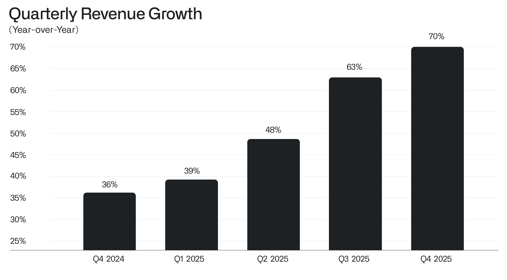
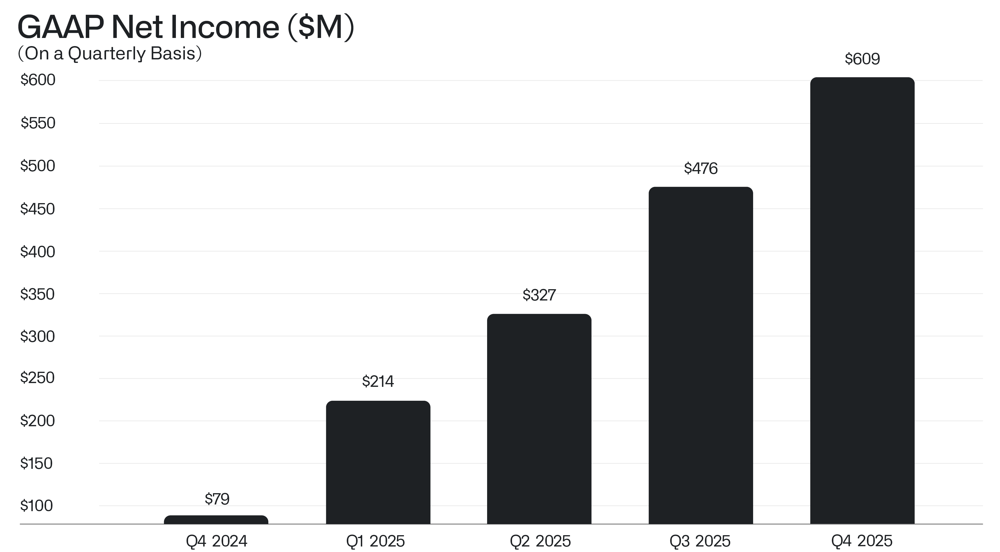
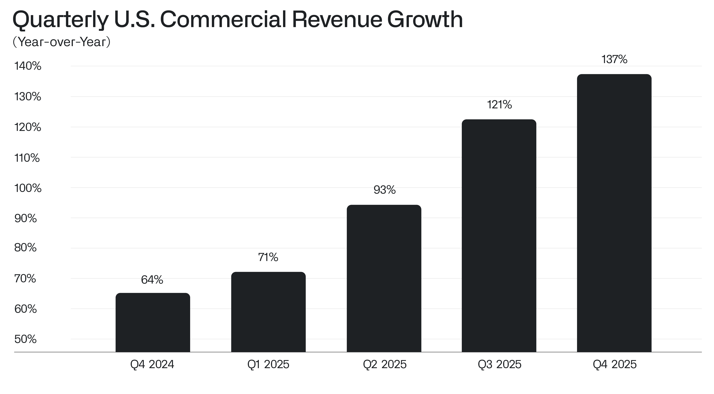

Letter to Shareholders
February 2, 2026
I.
We are at the outset, the very beginning, of a generational project.
Our financial results, those crude and imperfect metrics by which a market filled with both excitement and fear attempts to assess the value of the companies it covets, have again exceeded even our most ambitious expectations.
We generated $1.4 billion in revenue in the fourth quarter last year, a new record in our twenty-three year history—representing a 70% growth rate over the same period the year before.
Such a massive acceleration in growth, for a company of this scale and size, is a remarkable achievement—a cosmic reward of sorts to those who were interested in advancing our admittedly idiosyncratic project and embraced, or at least did not wholly reject, our mode of working.
The more familiar path for technology companies has been to seek the affection and capital of the public markets, and to monetize at the height of expectation, before entering a long yet certain contraction into obscurity.
We declined to take this approach. Our public offering more than five years ago marked the beginning of our ascent, not its peak.

And yet we have achieved this level of growth with significant discipline, which is seemingly scarce in the industry today, generating a new record of $609 million of profit in a single quarter, representing a 28% quarter-over-quarter increase.
We still remember, and will not soon forget, enduring for years polite yet firm questions about the potential profitability and indeed more fundamentally the wisdom of our approach.

Other pockets of what some not incorrectly describe as an exuberant market for artificial intelligence systems may feel pressure to manage their businesses around their financials.
Our record profit, however, is pure and uncontrived.
And it is, perhaps more important, the consequence of a business built around software platforms, not legions of well-credentialed consultants with their presentations and wise counsel.
II.
Our business in the United States sits at the core of this company.
We generated $1.1 billion in revenue in the U.S. market alone last quarter, representing a 93% growth rate over the same period the year before.
Our rise has been, and we believe will continue to be, driven by an increasingly discerning set of companies and institutions in the United States that understand the value of artificial intelligence but are now declining to pay for science projects.
A gulf is emerging between those who perceive the preconditions for harnessing the power of artificial intelligence and others who are far more vulnerable and adrift. Indeed, the world of A.I. adoption is increasingly divided between haves and have-nots.
Some institutions as well as nations are thriving; others have been left naked on the beach.
The large language models alone will not lead us to salvation. They require a means of reliably and efficiently interacting with the byzantine complexity of the modern enterprise—its tangle of datasets and operations and personnel.
The strings of text produced by the language models are little without a software architecture that can lend a grammar and structure to the output of these probabilistic prediction engines. The models must be tethered to objects in the real world, and it is that tether, that means of grounding and orientation, that we have built.
As a result, our U.S. commercial business, once a promising yet mostly theoretical backwater of our company, is now growing at an astonishing rate, generating $507 million last quarter—a 137% increase over the same period the year before.

To be clear, our U.S. commercial business has more than doubled in the space of twelve months.
Such a brisk rate of expansion, all while maintaining record levels of profitability, would be remarkable for a newly hatched startup. It is essentially unprecedented, we believe, for a company entering its third decade of operations.
We have arrived at this moment as a result of a fierce pragmatism—a nearly ruthless focus on results and outcomes at the expense of the performative and the theatrical.
In 1962, Deng Xiaoping, who would architect and oversee the remarkable and sweeping opening of China’s economy to the outside world, famously reminded his country that “it doesn’t matter if a cat is black or white as long as it catches mice.”
He would eventually be purged from the Communist Party for his reformist instincts and sent to work in a tractor factory in Jiangxi province.
The jargon and posturing in the technology industry, the breathless anticipation of the arrival of artificial general intelligence, has today reached new heights.
Anything lacking a zealous focus on the value being created by these technical systems, the mice that the cat actually catches, will ultimately fade to gray and be forgotten.
III.
It is confounding to many that the same software system that is capable of preventing a terror attack may be equally capable of preventing an unconstitutional intrusion into the private lives of citizens by the state.
But that is the software system that we have, quite intentionally, built.
And such software, alongside the large language models that have remade the world, is set not only to further reshape U.S. national security, but also to transform our collective ability to guard against government overreach.
It is “the uninvited ear” of the state with which the Fourth Amendment is concerned, Justice Potter Stewart wrote in Katz v. United States.
And as Justice Stewart reminded us, in that electric and landmark case of 1967, which reimagined what constitutes an unlawful breach into our most private spaces: “Wherever a man may be, he is entitled to know that he will remain free from unreasonable searches and seizures.”
Such freedom from unwarranted government surveillance, however, whether it be an intruding eye of the state or its uninvited ear, requires the construction of a technical system that is built to make possible oversight of its own use and limit, not expand, the material and information subject to access.
It should indeed be uncontroversial that the single most effective means of guarding against incursions into our private lives is to invest in the development of a technical platform that makes possible constraints on government action and investigation through granular permissioning capabilities, to ensure that the state and its agents can see only what ought to be seen, and functional audit logs, to ensnare both external and internal threats.
And that is the system, singular and without peer, we believe, we have built.
The construction of such a platform, one that reflects our ethical commitments, should, of course, be a rallying cry for progressives and critical thinkers across the political spectrum who profess to be interested in advancing the values of the Fourth Amendment.
And yet many take the easier path, blithely dismissing technology as the enemy, and as a result depriving themselves of any role in crafting our most capable shield against the very government that we serve.
IV.
We have, as a country and perhaps as well a civilization, grown uncertain of what we believe and far too fearful of embracing any degree of cultural specificity in our communal lives, banishing sentiment and belief from the public and corporate spheres under an often-hollow banner of inclusion.
But inclusion into what?
What is the common set of values and sentiments—that messy yet fertile amalgamation of interests, predilections, and commitments that constitutes an authentic community—into which we aspire to include anyone?
Is this nation nothing more than an economic zone, an empty administrative vessel, through which a newly globalized elite can travel and enrich itself?
It seems at times that we have abandoned any hope of patrolling the boundaries of our community, of resisting the superficial appeal of a hollow pluralism, in which all cultures and cultural values are declared by fiat and without reflection equal.
We are in retreat, so fearful of common endeavor and identity that all that remains is the self.
In The Culture of Narcissism, published in 1979, Christopher Lasch correctly observed that “the ‘psychological man’ of the twentieth century seeks neither individual self-aggrandizement nor spiritual transcendence but peace of mind.” And yet such peace is often shallow and unsatisfying.
It is that instinct within us to prize the management of our own psychology above all else that makes possible fabricated grievances and imagined slights.
V.
I fear that a divide is emerging in the world.
It is a divide and now perhaps more of a gulf between those who have the temerity to build, to expose themselves to others, to risk failure and defeat—and those whose sense of self is propped up by a purely oppositional identity, a loose constellation of beliefs that one is superior, morally and constitutionally, to others.
The public understands that results are what matter, not the perception of results or the appearance of forward progress and movement but actual results and movement.
The discussion seminar of modern politics has been exposed as such to many—and the public has grown quite disinterested in the theatricality of the contemporary political stage.
We note that it is a mistake to think of the act of creation, of construction, of building something from nothing, as being confined to the technology or commercial sectors. Far from it.
There are dancers and poets and painters and writers and teachers and revolutionaries and radicals—all of whom are creators in that thickest sense of the word. We must celebrate the risks they take, the beliefs they wield, and the empires they are building.
Yet the chattering class and merely critical have lulled us into a kind of sleep, into thinking that commentary and rhetoric alone, without any corollary or yardstick in the physical world, is sufficient. We should and indeed must revolt.
An uncomfortable fact is that those who are most bearish on their own abilities often turn to organizing politically.
At Palantir, we have made the vital decision to decline to bend our way of working to a world in which “success is whatever passes for success,” as the moral philosopher Alasdair MacIntyre, a towering figure, wrote in After Virtue in 1981.
And it would be prudent at this juncture to prepare for a world in which the critical class finds itself increasingly marginalized, its power over the culture diminished and in significant retreat.
VI.
It would be utterly striking to some on the outside how we run this raucous artist colony of a company—more akin to an engineering commune than a corporation.
A remarkable amount of internal disagreement and conflict is permitted, even encouraged. The raw power of authority, the threat of coercion, is wielded sparingly and hopefully with true restraint.
Such tolerance for dissent and ambition and rogue actors and radical ideas has cultivated in us something approaching magnanimity towards our adversaries and even our enemies.
A degree of grace in business, and indeed life, towards those who have wronged us, even those who may pray for our demise, is vital.
Our collective temptation to cast our antagonists, geopolitical and otherwise, as narrow caricatures, refusing to acknowledge their strengths and advantages, will only diminish our ability to prevail over them in the long term.
A maniacal obsession with one’s own virtuousness, and the insidiousness of one’s enemies, can indeed be blinding.
In an interview last year, the dean of postwar comedy Lorne Michaels suggested to Maureen Dowd that the most effective and withering caricatures of seemingly distasteful personalities are the ones that find “a drop of humanity” in them.
The same could be said of skirmishes and antagonisms in business and indeed on the world stage.
A degree of humility, and finding that drop of humanity in one’s opponent, can be a lethal advantage.
Sincerely,

Alexander C. Karp
Co-Founder & Chief Executive Officer
Palantir Technologies Inc.
Forward-Looking Statements
This letter contains “forward-looking statements” within the meaning of the “safe harbor” provisions of the Private Securities Litigation Reform Act of 1995, including, but not limited to, statements regarding our financial outlook, product development and related timing, distribution, and pricing, expected benefits of and applications for our software platforms, business strategy, and plans (including strategy and plans relating to our Artificial Intelligence Platform (“AIP”), sales and marketing efforts, sales force, partnerships, and customers), investments in our business, market trends and market size, opportunities (including growth opportunities), our expectations regarding our existing and potential investments in, and commercial contracts with, various entities, our expectations regarding macroeconomic events, and positioning. These forward-looking statements are made as of the date they were first issued and were based on current expectations, estimates, forecasts, and projections as well as the beliefs and assumptions of management. Words such as “guidance,” “expect,” “anticipate,” “should,” “believe,” “hope,” “target,” “project,” “plan,” “goals,” “estimate,” “potential,” “predict,” “may,” “will,” “might,” “could,” “intend,” “shall,” and variations of these terms or the negative of these terms and similar expressions are intended to identify these forward-looking statements. Forward-looking statements are subject to a number of risks and uncertainties, many of which involve factors or circumstances that are beyond our control. Our actual results could differ materially from those stated or implied in forward-looking statements due to a number of factors, including but not limited to risks detailed in our filings with the Securities and Exchange Commission (the “SEC”), including in our quarterly report on Form 10-Q for the fiscal quarter ended September 30, 2025 and other filings and reports that we may file from time to time with the SEC, including our current report on Form 8-K furnishing our earnings press release for the fiscal quarter and year ended December 31, 2025 and our annual report on Form 10-K for the fiscal year ended December 31, 2025. In particular, the following factors, among others, could cause our results to differ materially from those expressed or implied by such forward-looking statements: our ability to successfully execute our business and growth strategy; the sufficiency of our available funds to meet our liquidity needs; the demand for our platforms, product offerings, and services in general; our ability to increase our number of new customers and revenue generated from customers; our ability to realize some or all of the total contract value of customer contracts as revenue, including any contractual options available to customers or contractual periods that are subject to termination for convenience provisions; our long and unpredictable sales cycle; our ability to successfully execute our channel sales and other strategic initiatives with third parties; our ability to retain and expand our customer base; the fluctuation of our results of operations and our key business measures on a quarterly basis in future periods; the seasonality of our business; the implementation process for our platforms, which may be complex and lengthy; our ability to successfully develop and deploy new technologies to address the needs of our existing or prospective customers; our ability to make our platforms and product offerings easier to install, consume, and use; our ability to maintain and enhance our brand and reputation; our ability to maintain and enhance our culture as our business grows and as we pursue our business and financial goals; news or social media coverage or other external scrutiny about us or our leadership, including but not limited to coverage that presents, enhances, or relies on, inaccurate, misleading, incomplete, or otherwise damaging information, misconceptions, or falsehoods; the impact of recent, ongoing, or future global macroeconomic and geopolitical events, fluctuating interest rates, monetary policy changes, foreign currency fluctuations, or the potential or actual imposition of tariffs or other impacts on trade relations on the business and operations of our company or of our existing or prospective customers and partners; issues raised by the use of artificial intelligence in our platforms; and any breach or access to our or customer or third-party data.
The forward-looking statements included in this letter represent our views as of the date of this letter. We anticipate that subsequent events and developments will cause our views to change. We undertake no intention or obligation to update or revise any forward-looking statements, whether as a result of new information, future events or otherwise. These forward-looking statements should not be relied upon as representing our views as of any date subsequent to the date of this letter. Past performance is not necessarily indicative of future results.
Other Notes
This letter may contain certain non-GAAP financial measures. Our definitions may differ from the definitions used by other companies and therefore comparability may be limited. In addition, other companies may not publish these or similar metrics. Further, these metrics have certain limitations in that they do not include the impact of certain expenses that are reflected in our consolidated statements of operations. Thus, these non-GAAP financial measures should be considered in addition to, not as a substitute for, or in isolation from, measures prepared in accordance with GAAP. We compensate for these limitations by providing reconciliations of these non-GAAP financial measures to the most comparable GAAP measures, which can be found in our investor presentation and/or earnings release, which are available on our investor relations website (investors.palantir.com). We encourage investors and others to review our business, results of operations, and financial information in its entirety, not to rely on any single financial measure, and to view these non-GAAP financial measures in conjunction with the most directly comparable GAAP financial measures.
This letter may contain statistical data, estimates, forecasts, and statements that are based on independent industry publications or other publicly available information, as well as other information based on our internal sources. This information involves many assumptions and limitations, and you are cautioned not to give undue weight to these estimates. We have not independently verified the accuracy or completeness of the data contained in these industry publications and other publicly available information. Accordingly, we make no representations as to the accuracy or completeness of that data nor do we undertake to update such data after the date of this letter. This letter may refer to various growth rates when discussing our business. These rates reflect year-over-year comparisons unless otherwise stated.
By receiving this letter, you acknowledge that you will be solely responsible for your own assessment of the market and our market position and that you will conduct your own analysis and be solely responsible for forming your own view of the information provided, including regarding the potential future performance of our business.